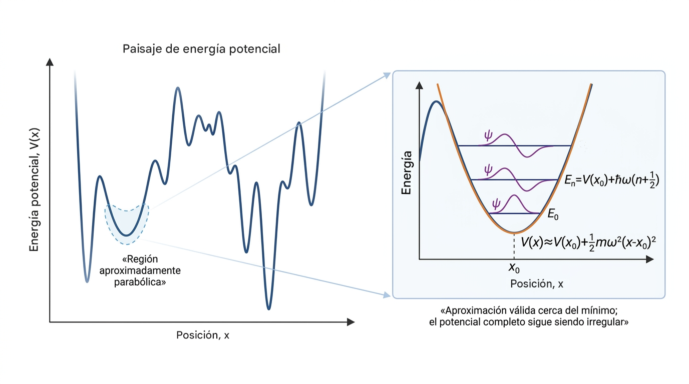

Oscilador Armónico Cuántico
Información del documento
- Área: Física, Mecánica Cuantica
- Autoría: Campaña Vergara Jackson
- Última actualización: 31/10/26
- Estado: [✏ Borrador]
Prerrequisitos
- [Añade aquí los conceptos previos y enlaza las páginas existentes.]
Resumen
Uno de los sistemas físicos de mayor interés teórico, el oscilador armónico, cuya energia potencial es \(V=\frac{1}{2}m\omega^2 x^2\). Para simplificar el tratamiento nos restringimos al caso unidimensional, que carece de degeneración (el oscilador armónico en más de una dimensión es un problema degenerado que, para su tratamiento cabal, requiere en la teoría clásica de la teoría del momento angular, la que habremos de desarrollar mas adelante).
El oscilador armónico suministra importante información acerca de las vibraciones atómicas en las moléculas y los sólidos dado que aparece cuando potenciales más o menos complicados se aproximan en la región de un mínimo con curvas parabólicas. Por lo tanto, se trata esencialmente de la teoría de oscilaciones poco energéticas en torno a un mínimo de potencial, situación que se da con frecuencia con átomos, moléculas, etc. Además, el empleo frecuente del análisis de Fourier para estudiar sistemas complejos en términos de osciladores elementales hace del oscilador armónico uno de los problemas más importantes de la física teórica, sin considerar su interés metodológico debido al hecho de poseer solución exacta bajo la ecuación de schrodinger: $$ \frac{-\hbar^2}{2m} \frac{d^2}{dx^2} \Psi + \frac{1}{2}m\omega^2 x^2 \Psi = E \Psi$$

Imagen hecha con figurelabsConceptos fundamentales
A primera vista, la elección de un potencial proporcional a la posición al cuadrado, \(V(x) = \frac{1}{2}m\omega^2 x^2\), evoca directamente al resorte clásico de la ley de Hooke. Sin embargo, su relevancia en física cuántica va mucho más allá de un simple resorte. En la naturaleza, cualquier sistema cuántico cerca de un punto de equilibrio estable (como los átomos vibrando dentro de una molécula o en una red cristalina) puede aproximarse mediante un potencial parabólico al truncar su expansión en serie de Taylor a segundo orden.
Este modelo surge de preguntar qué ocurre si la energía potencial es parabólica. El operador de energía cinética cuántica es [ \hat{T}=-\frac{\hbar^2}{2m}\nabla^2, ] cuyo valor esperado es no negativo para funciones de onda normalizables que satisfacen las condiciones de frontera apropiadas.
Definiciones
Ecuación de Schrodinger: \(\frac{-\hbar^2}{2m} \nabla^2 \Psi + V(\vec{r}) \Psi = E \Psi\)
Solución del Oscilador Armónico Cuántico
El Hamiltoniano del oscilador armónico en una dimensión (1D) está dado por:
Reordenando para aislar la derivada de mayor orden:
Definimos las constantes físicas estándar con dimensiones apropiadas:
- \(a^2 = \frac{m\omega}{\hbar} \implies a^4 = \frac{m^2\omega^2}{\hbar^2}\)
- \(k^2 = \frac{2mE}{\hbar^2}\)
Obtenemos la ecuación diferencial reestructurada:
Cambio de Variable Hacia la Ecuación Confluente
Aplicando la transformación \(y = a^2 x^2\):
Calculando la segunda derivada:
Sustituyendo en la ecuación diferencial principal:
Dividiendo toda la ecuación entre \(4a^2\):
Definimos el parámetro adimensional de energía \(\mathcal{E}\):
Sustituyendo \(\frac{k^2}{4a^2} = \frac{\mathcal{E}}{2}\), obtenemos la ecuación intermedia:
Comportamiento Asintótico \(e^{-y/2}\) (Ecuación de Kummer)
Para grandes valores de \(y\), la ecuación dominante toma la forma:
Esto sugiere una solución asintótica de la forma \(\psi(y) = e^{-y/2} w(y)\) para valores grandes de \(y\), recordando que \(y = x^2 \geq 0\). Con esta propuesta, acoplamos dicho comportamiento asintótico a una función propuesta \(w(y)\) que dictará el comportamiento de la solución en regiones cercanas al origen.
Calculamos las derivadas de \(\psi(y) = e^{-y/2} w(y)\):
Sustituyendo en la ecuación intermedia \((*)\) y simplificando el factor común \(e^{-y/2}\):
Desarrollando los términos:
Llegamos exactamente a la Ecuación Hipergeométrica Confluente (de Kummer):
La cual es capaz de entregar una solución basada en polinomios especiales según los parámetros \(a\) y \(b\) involucrados en el problema. Es una forma generalizada desde la cual se obtiene la solución mediante los Polinomios de Hermite, donde:
Transformación a la Variable Espacial \(\xi = \sqrt{y}\) (Ecuación de Hermite)
Si en lugar de \(y\) empleamos la coordenada espacial adimensional \(\xi = ax = \sqrt{\frac{m\omega}{\hbar}} x\):
Calculando las derivadas correspondientes:
Expresando la ecuación de Kummer en términos de la variable espacial \(\xi\):
Simplificando los términos, obtenemos la Ecuación Diferencial de Hermite:
NOTA: Claramente se pudo obtener directamente este resultado pero es interesante observar como surgen los polinomios de hermite de la ecuación hipergeométrica confluente (Ec. de Kummer).
Con esto concluimos que la solución general del oscilador armónico cuántico es muy parecida a la ecuación de los Polinomios de Hermite \(H_n(\xi)\). Solo si \(2\mathcal{E} - 1=2n\) con \(n\) un numero entero positivo, a rigor falta demostrar la discretización de este termino para que la solución de la función de valores cercanos al origen \(w(\xi)\) es efectivamente dada por dichos polinomios.
Para demostrarlo supondremos la solución de \(w(\xi)\) en forma de una serie de potencias en forma del metodo de Frobenious.
Proponemos la solución de Frobenius en la forma general:
Proponemos la solución en serie de potencias en la forma general de Frobenius para \(w(\xi)\):
Sustituyendo \(w(\xi)\), \(w'(\xi)\) y \(w''(\xi)\) en la ecuación diferencial de Hermite:
Para eliminar los términos sobrantes tomamos \(s=0\), con ello la serie queda limpia y obtenemos la relación de recurrencia para \(k \ge 0\).
Como el salto en los subíndices es de \(k \to k+2\), la paridad queda completamente desacoplada:
-
Los coeficientes pares (\(c_0, c_2, c_4, \dots\)) dependen únicamente de \(c_0\).
-
Los coeficientes impares (\(c_1, c_3, c_5, \dots\)) dependen únicamente de \(c_1\).
[Presenta el desarrollo habitual para un curso universitario.]
[Explica la idea con palabras, ejemplos o diagramas.]
Para que la función de onda \(\psi(\xi) = w(\xi) e^{-\xi^2/2}\) represente un estado físico válido, debe pertenecer al espacio de Hilbert \(L^2(\mathbb{R})\), lo que exige que su norma sea finita: \(\|\psi\|^2 < \infty\). A continuación se demuestra que si la serie \(w(\xi)\) no se trunca en un polinomio, esta integral diverge estrictamente a \(+\infty\).
Comportamiento Asintótico de los Coeficientes
Partimos de la relación de recurrencia exacta para la rama par (o impar):
Si la serie no se trunca, el numerador nunca es cero. Existe un entero \(M \in \mathbb{N}\) suficientemente grande tal que para todo \(m \ge M\), se cumple \(4m - (2\mathcal{E} - 1) > 0\). Como el denominador siempre es positivo, a partir de \(M\) todos los coeficientes mantienen el mismo signo. Asumiremos \(c_{2M} > 0\).
Analizamos el cociente de coeficientes para \(m \ge M\):
Para \(m\) grande, el término dominante en el numerador es \(4m\) y en el denominador es \(4m^2\), por lo que el cociente decae como \(1/m\). Formalmente, siempre es posible elegir un índice \(K \ge M\) y una constante estricta \(\gamma > 0\) tal que para todo \(m \ge K\):
Para hallar el valor de un coeficiente avanzado \(c_{2N}\) (con \(N > K\)), multiplicamos todos los cocientes intermedios desde \(m = K\) hasta \(N-1\). Esto forma un producto telescópico donde los términos intermedios se cancelan:
Aplicando nuestra desigualdad a cada factor:
Despejando \(c_{2N}\) y agrupando todas las constantes que no dependen de \(N\) en una única constante global \(A = c_{2K} \gamma^{-K} K! > 0\), obtenemos la cota inferior estricta:
$\(c_{2N} \ge A \frac{\gamma^N}{N!} \quad \text{para todo } N \ge K\)$ (Para simplificar la notación en la integral posterior, podemos reabsorber \(\gamma\) en un cambio de escala o asumir el caso límite donde comparamos directamente, por lo que escribiremos genéricamente \(c_{2m} \ge \frac{A}{m!}\)).
Acotación Inferior de la Función \(w(\xi)\) frente al Polinomio
Sabiendo que \(c_{2m} \ge \frac{A}{m!}\), dividimos la función \(w(\xi)\) en dos partes: el tramo finito inicial y la cola infinita.
Aplicamos la cota a la cola infinita:
Reconocemos que esta suma es casi la serie de Taylor de la función exponencial, solo le faltan los primeros \(K\) términos:
Sustituyendo esto en la función original \(w(\xi)\):
El argumento de dominancia asintótica (Detalle Omitido): Agrupemos los términos polinómicos en un solo polinomio \(Q(\xi) = P(\xi) - A \sum_{m=0}^{K-1} \frac{\xi^{2m}}{m!}\). Sabemos por el Teorema de L'Hôpital que la función exponencial \(e^{\xi^2}\) crece asintóticamente mucho más rápido que cualquier polinomio finito \(Q(\xi)\). Por tanto, el cociente \(|Q(\xi)| / e^{\xi^2} \to 0\) cuando \(\xi \to \infty\).
Esto garantiza que existe un punto en el espacio \(\xi_0 > 0\) a partir del cual el término \(A e^{\xi^2}\) es tan inmensamente superior al polinomio \(Q(\xi)\) que lo absorbe holgadamente, permitiéndonos asegurar que para todo \(|\xi| > \xi_0\):
Criterio de Integrabilidad para la Norma en \(L^2(\mathbb{R})\)
Ahora evaluamos la condición física de normalización calculando la norma al cuadrado \(\|\psi\|^2\).
Dado que el integrando es estrictamente positivo, la integral sobre todo el dominio real es mayor que la integral evaluada únicamente en las "colas" del espacio (para \(|\xi| > \xi_0\)):
Sustitución de la cota inferior: Reemplazamos \(w(\xi)\) por la desigualdad estricta \(\frac{A}{2} e^{\xi^2}\) que demostramos para esa región:
Elevamos al cuadrado y operamos los exponentes:
Conclusión del límite de divergencia: Para cualquier número real \(\xi\), se cumple que \(e^{+\xi^2} \ge 1\). Sustituyendo esto en la integral:
La integral diverge irremisiblemente a infinito. Esto demuestra matemáticamente que la única forma de que la función de onda sea físicamente admisible (cuadrado integrable) es impedir la existencia de la cola infinita, forzando al numerador de la recurrencia a ser cero en algún punto: \(2N - (2\mathcal{E} - 1) = 0\).
Cuantización Inevitable de \((2\mathcal{E} - 1)\)
Para evitar que la serie \(w(\xi)\) sea infinita y diverja asintóticamente como \(e^{\xi^2}\) (lo que destruiría la normalizabilidad de la función de onda total \(\psi(\xi) = w(\xi)e^{-\xi^2/2}\)), la serie debe truncarse en un polinomio de grado finito \(N\).
Esto requiere que el numerador de la recurrencia sea cero para un índice entero \(k = N\):
Llamando \(n = N\) al grado del Polinomio de Hermite \(H_n(\xi)\):
Despejando la energía adimensional \(\mathcal{E} = \frac{E}{\hbar\omega}\):
Resultado Final de la Energía
Conclusión
El uso directo de \(s = 0\) demuestra que no es estrictamente necesario separar \(s = 1\) y \(s = 0\) como dos casos independientes. La estructura del salto \(k+2\) en la recurrencia de \(s = 0\) separa naturalmente a la función \(w(\xi)\) en sus componentes par e impar, y la exigencia física de normalizabilidad fuerza a que \(2\mathcal{E}-1\) sea un entero par no negativo, cuantizando la energía de forma automática.
Desarrollo en tres niveles de rigor
[Explica la idea con palabras, ejemplos o diagramas.]
[Presenta el desarrollo habitual para un curso universitario.]
[Expón las hipótesis, definiciones formales y demostraciones completas.]
Resultados principales
[Enuncia los teoremas, leyes o relaciones importantes.]
Referencias
- [Añade aquí libros, artículos o recursos consultados.]